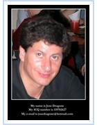
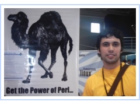
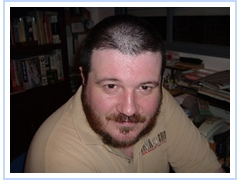

Miembros
Cómo me hago miembro ?
Para ser un miembro del CaFe.pm, solo tenés que estar suscripto a nuestra
lista de correo, y tener ganas de participar en las actividades que
realizamos.
Si querés aparecer en esta sección de la web, envíle una foto,
no muy
pesada y de un tamaño reducido, junto con tus datos (Nombre, Apodo,
Info personal, Email y Web) a wlamagna [at] gmail.com
Los miembros que aparecen a continuación, son sólo algunos, de la gran
cantidad de personas que actualmente están suscriptas a nuestra lista
de correo.
Martín Ferrari
Email: martin.ferrari en gmail.com
Website: http://canterville.mine.nu/tincho/
Jose Dragone
|

|
Ingeniero en Informática, terminando la Lic. en Cs.
Físicas (UBA) donde aprendí a programar en Fortran bajo VAX. Enseña
C++ en la UNLM. Es Administrador de Red, y también programa en PHP,
muy bien en Shell Scripting y es maniático por Awk y Sed. Posee conocimientos
de MySQL y PostgreSQL. Dentro de sus principales intereses se encuentran
las meetings, con cerveza mediante, del CaFe.pm, y que se suscriban
mas chicas a la lista de correo.
|
Email: josedragone@hotmail.com
Pablo Daniel Cano
|

|
Ingeniero en Sistemas, simplemente usa Perl, el único
lenguaje de programación lo suficientemente ecléctico como para funcionar
má o menos bien en su cabeza. Tiene la suerte de poder ganarse la vida
desarrollando con Perl sobre Linux. Si no fuese Ingeniero le hubiese
gustado ser estrella de rock.
|
Email: canpaniel@cpan.org
Leonardo Pigñer
|
|
Fundador del CaFe.pm. Sus pasiones son la seguridad
de redes, Perl y la cerveza. Lo podés encontrar en la Oktoberfest, el
St. Patrick's Day y deambulando por los pubs irlandeses de Retiro.
|
Email: lpigner@gmail.com
Website: http://www.kung-foo.com.ar
Víctor A. Rodríguez
|

|
Apodo: Bit-Man, el bit Fantasma
|
Info personal en http://www.bit-man.com.ar/
Email: victor [at] bit-man [dot] com [dot]
ar
Website: http://www.bit-man.com.ar/
Walter Lamagna
|
|
Programador perl / Dataminer
|
Email: wlamagna@hotmail.com
Website: http://serverlinux.blogspot.com/